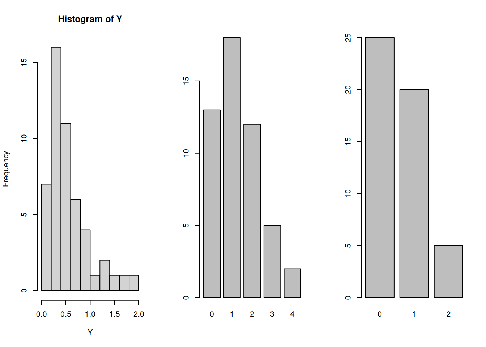
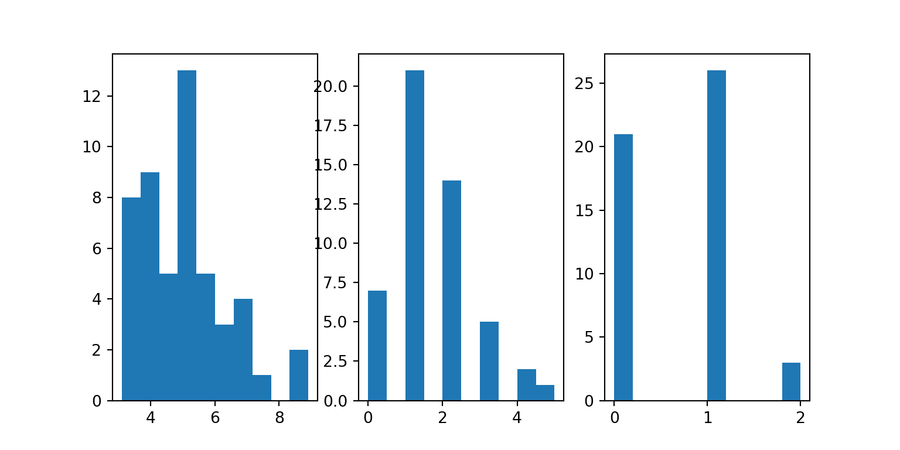

#R
set.seed(2137)
opar <- par(mfrow=c(1,3))
Y <- rgamma(50, 2, 3)
hist(Y)
W <- rpois(50, 1.3) # 50 obs from Pois(1.3)
barplot(table(W))
Z <- rbinom(50, size=2, 0.3) # 50 obs from Binom(2, 0.3)
barplot(table(Z))
The objective of any simulation study is to estimate an expectation \(E(X)\). Simulation studies involve the use of a computer to generate independent copies of the random variable of interest \(X\). Here are a couple of examples where simulation studies would be applicable.
Example 10.1 (Insurance Claims) Before the financial year begins, an insurance company has to decide how much cash to keep, in order to pay out the claims for that year. Suppose that claims are independent of each other and are distributed as \(Exp(1/200)\)1 dollars. Also suppose that the number of claims in a year is a Poisson random variable with mean 8.2.
An actuary has been asked to determine the size of the reserve fund that should be set up, and he recommends $12,000. We might consider answering the following question using simulation:
If we let \(Y\) be the random variable representing the total sum of claims, we are interested in estimating \(P(Y > 12000)\). Since probabilities are expectations, we can use simulation to estimate this value.
Here is a slightly more sophisticated example.
Example 10.2 (Sandwich Shop Closing Time) Suppose that you run a sandwich shop, which is open from 9am till 5pm. Your philosophy has always been to serve every customer who has entered before 5pm, even if that requires you to stay back until they have been served. You would like to estimate the mean amount of overtime you have to work.
If you are willing to assume that the inter-arrival times of customers is \(Exp(3)\) hours, then it is possible to simulate this process to estimate the mean time that you would have to remain open, beyond 5pm.
The two examples above are known as Discrete Event Simulations. In our course, we will not get to working with such scenarios. However, we will try to understand and familiarise ourselves with the basic building blocks of simulation studies. For more knowledge, do enrol yourself in ST3247!
The basic steps in a simulation study are:
This is sometimes referred to as Monte Carlo Simulation. Before proceeding, let us refresh our knowledge of the properties of the sample mean.
There are two important theorems that simulation studies rely on. The first is the Strong Law of Large Numbers (SLLN).
Theorem 10.1 (Strong Law of Large Numbers) If \(X_1, X_2, \ldots, X_n\) are independent and identically distributed with \(E(X) < \infty\), then \[ \bar{X} =\frac{1}{n} \sum_{i=1}^n X_i\rightarrow E(X) \quad \text{with probability 1.} \]
In the simulation context, it means that as we generate more and more samples (i.e. increase \(n\)), our sample mean \(\bar{X}\) converges to the desired value \(E(X)\), no matter what the distribution of \(X\) is.
The second theorem that aids us is the Central Limit Theorem (CLT).
Theorem 10.2 (Central Limit Theorem) Let \(X_1, X_2, \ldots, X_n\) be i.i.d., and suppose that
Then \[ \frac{\sqrt{n} (\bar{X} - \mu)}{\sigma} \Rightarrow N(0,1) \] where \(\Rightarrow\) denotes convergence in distribution.
This is sometimes informally interpreted to mean that when \(n\) is large, \(\bar{X}\) is approximately Normal with mean \(\mu\) and variance \(\sigma^2/n\). In the simulation context, we can use this theorem to obtain a confidence interval for the expectation that we are estimating.
Also take note of the following properties of the sample mean and variance:
Theorem 10.3 (Sample Estimates) It can be shown that both the sample mean and sample standard deviation are unbiased estimators. \[ E(\bar{X}) = E(X), \quad E(s^2) = \sigma^2 \] where \(s^2 = \frac{\sum (X_i - \bar{X})^2}{n-1}\).
To obtain a \((1-\alpha)100%\) confidence interval for \(\mu\), we use the following formula, from the CLT:
\[ \bar{X} \pm z_{1-\alpha/2} \frac{s}{\sqrt{n}} \]
When our goal is to estimate a probability \(p\), we have to introduce a corresponding indicator variable \(X\) such that
\[ X = \begin{cases} 1 & \text{with probability $p$} \\ 0 & \text{with probability $1- p$} \end{cases} \]
In this case, the formula for the CI becomes \[ \bar{X} \pm z_{1-\alpha/2} \sqrt{\frac{\bar{X}(1-\bar{X})}{n}} \]
Both R and Python contain built-in routines for generating random variables from common “named” distributions, e.g. Normal, Uniform, Gamma, etc. All software that can generate random variables utilise Pseudo-Random Number Generators (PRNG). These are routines that generate sequences of deterministic numbers with very very long cycles. However, since they pass several tests of randomness, they can be treated as truly random variables for all intents and purposes.
In both software, we can set the “seed”. This initialises the random number generator. When we reset the seed, we can reproduce the stream of random variables exactly. This feature exists:
Example 10.3 (Random Variable Generation)
In R, all the functions for generating random variables begin with r (for random). Here are a few such functions:
| Function name | Random Variable |
|---|---|
rnorm |
Normal |
runif |
Uniform |
rgamma |
Gamma |
rpois |
Poisson |
rbinom |
Binomial |
In Python, we can generate random variables using numpy and/or scipy. In our course, we shall use the scipy routines because its implementation is closer in spirit to R.
| Function name | Random Variable |
|---|---|
norm |
Normal |
uniform |
Uniform |
gamma |
Gamma |
poisson |
Poisson |
binom |
Binomial |
#Python
import numpy as np
import pandas as pd
from scipy.stats import binom, gamma, norm, poisson
from scipy import stats
import matplotlib.pyplot as plt
rng = np.random.default_rng(2137)
fig, ax = plt.subplots(1, 3, figsize=(8,4))
ax1 = plt.subplot(131)
r = gamma.rvs(2, 3, size=50, random_state=rng)
ax1.hist(r);
ax1 = plt.subplot(132)
r = poisson.rvs(1.3, size=50, random_state=rng)
ax1.hist(r);
ax1 = plt.subplot(133)
r = binom.rvs(2, 0.3, size=50, random_state=rng)
ax1.hist(r);
Suppose we wish to evaluate
\[ \int_{-\infty}^{\infty} h(x) f(x) \text{d}x \] where \(f(x)\) is a pdf. The integral above is in fact equal to \(E(h(X))\), where \(X \sim f\). Hence we can use everything we have discussed so far, to evaluate the expression using simulation! Everything depends on:
It is critical that the support of the pdf is the same as the range of integration.
Example 10.4 (Monte Carlo Integration over (0,1)) Suppose Suppose we wish to evaluate \[ \theta = \int_0^1 e^{2x} dx = \int_0^1 e^{2x} \cdot 1\; dx \]
We can identify that this is equal to \(E(h(X))\) where
Thus we can follow this pseudo-code:
In this simple case, we can in fact work out analytically that the integral is equal to \[ \frac{1}{2}(e^2 - 1) = 3.195 \]
In this section, we shall touch on how we can use simulation in some scenarios that are closer to the real world.
The usual 95% confidence interval for a mean is given by \[ \bar{X} \pm t_{0.025} s/\sqrt{n} \] where \(t_{0.025}\) is the 0.025 quantile of the t-distribution with \(n-1\) degrees. The resulting interval should contain the true mean in 95% of the experiments. However, it is derived under the assumption that the data is Normally distributed. Let us see if it still works if the data is from an asymmetric distribution: \(Pois(0.5)\).
Example 10.5 (Coverage of Confidence Interval)
# R
set.seed(2139)
output_vec <- rep(0, length=100)
n <- 20
lambda <- 0.5
for(i in 1:length(output_vec)) {
X <- rpois(n, .5)
Xbar <- mean(X)
s <- sd(X)
t <- qt(0.975, n-1)
CI <- c(Xbar - t*s/sqrt(n), Xbar + t*s/sqrt(n))
if(CI[1] < lambda & CI[2] > lambda) {
output_vec[i] <- 1
}
}
mean(output_vec)[1] 0.92rng = np.random.default_rng(2137)
output_vec = np.zeros(100)
n = 20
lambda_ = 0.5
for i in range(100):
X = poisson.rvs(0.5, size=n, random_state=rng)
Xbar = X.mean()
s = X.std()
t = norm.ppf(0.975)
CI = [Xbar - t*s/np.sqrt(n), Xbar + t*s/np.sqrt(n)]
if CI[0] < lambda_ and CI[1] > lambda_:
output_vec[i] = 1
output_vec.mean()np.float64(0.86)Consider the independent two-sample \(t\)-test that we introduced in topic 7. The formal set-up also includes the assumption that our data arises from a Normal distribution. According to the theory of the \(t\)-test, if both groups have the same mean, we should falsely reject the null hypothesis 10% of the time if we perform it at 10% significance level. Let us assess if this is what actually happens.
Example 10.6 (T-test Type I Error)
generate_one_test <- function(n=100) {
X <- rnorm(n)
Y <- rnorm(n)
t_test <- t.test(X, Y,var.equal = TRUE)
# extract the p-value from the t_test
if(t_test$p.value < 0.10)
return(1L)
else
return(0L)
}
set.seed(11)
output_vec <- vapply(1:2000,
function(x) generate_one_test(),
1L)
mean(output_vec)[1] 0.108def generate_one_test(n=100):
X = norm.rvs(0, 1, size=n, random_state=rng)
Y = norm.rvs(0, 1, size=n, random_state=rng)
t_test = stats.ttest_ind(X, Y, equal_var=True)
if t_test.pvalue < 0.10:
return 1
else:
return 0
output_vec = np.array([generate_one_test() for j in range(2000)])
output_vec.mean()np.float64(0.0955)Example 10.7 Suppose that daily demand for newspaper is approximately gamma distributed, with mean 10,000 and variance 1,000,000. The newspaper prints and distributes 11,000 copies each day. The profit on each newspaper sold is $1, and the loss on each unsold newspaper is 0.25. Formally, the daily profit function h is
\[ h(X) = \begin{cases} 11000 & \text{if } X ≥ 11000 \\ \lfloor X \rfloor + (11000 - \lfloor X \rfloor)(−0.25) & \text{if } X < 11000 \end{cases} \]
where \(X\) represents the daily demand. Let us estimate the expected daily profit using simulation.
# R code to estimate the expected daily profit
set.seed(2141)
n <- 10000
X <- rgamma(n, 100, rate=1/100)
hX <- ifelse(X >= 11000, 11000, floor(X) + (11000 - floor(X)) * (-0.25))
#mean(hX)
# 90% CI for the mean
s <- sd(hX)
q1 <- qnorm(0.95)
CI <- c(mean(hX) - q1*s/sqrt(n), mean(hX) + q1*s/sqrt(n))
cat("The 90% CI for the mean is (", format(CI[1], digits=2, nsmall=2), ", ",
format(CI[2], digits=2, nsmall=2), ").\n", sep="")The 90% CI for the mean is (9639.10, 9673.69).n = 10000
X = gamma.rvs(100, scale=100, size=n, random_state=rng)
hX = np.where(X >= 11000, 11000, np.floor(X) + (11000 - np.floor(X)) * (-0.25))
# 90% CI for the mean
Xbar = hX.mean()
s = hX.std()
t = norm.ppf(0.95)
CI = [Xbar - t*s/np.sqrt(n), Xbar + t*s/np.sqrt(n)]
print(f"The 90% CI for the mean is ({CI[0]: .3f}, {CI[1]: .3f}).")The 90% CI for the mean is ( 9623.651, 9658.579).The next section introduces two techniques that are based on resampling the data.
Consider the two-sample t-test that we introduced in topic 06. This parametric test requires us to check if the data from the two groups came from Normal distributions. The non-parametric version requires each group to have at least 10 observations. What if our data satisfies neither criteria?
The permutation test is applicable in such a situation. It makes no distributional assumptions whatsoever on the data. Here is pseudo-code for how it works:
The \(p\)-value for the null hypothesis can be computed by computing the proportion of simulated statistics that were larger in absolute value than the observed one.
Example 10.8 (Abalone Data)
In the abalone dataset, this was the output from the t-test:
abl <- read.csv("data/abalone_sub.csv")
x <- abl$viscera[abl$gender == "M"]
y <- abl$viscera[abl$gender == "F"]
t.test(x, y, var.equal=TRUE)
Two Sample t-test
data: x and y
t = 0.91008, df = 98, p-value = 0.365
alternative hypothesis: true difference in means is not equal to 0
95 percent confidence interval:
-0.02336287 0.06294287
sample estimates:
mean of x mean of y
0.30220 0.28241 This would be the procedure for a permutation test:
The video on Canvas provides a very brief introduction to bootstrapping. One of the greatest benefits of the bootstrap is the ability to provide confidence intervals for estimators for which we may not have the know-how to derive analytic or asymptotic results.
Consider obtaining a confidence interval for the trimmed mean, that we encountered in Section 5.1.
Example 10.9
This is how we can use bootstrapping to obtain a confidence interval for a trimmed mean.
[1] 4.280417
One Sample t-test
data: chem
t = 3.9585, df = 23, p-value = 0.0006236
alternative hypothesis: true mean is not equal to 0
95 percent confidence interval:
2.043523 6.517311
sample estimates:
mean of x
4.280417 Notice how the CI from the non-robust technique is very wide.
library(boot)
stat_fn <- function(d, i) {
b <- mean(d[i], trim=0.1)
b
}
boot_out <- boot(chem, stat_fn, R = 1999, stype="i")
# Returns two types of bootstrap intervals:
boot.ci(boot.out = boot_out, type=c("perc", "bca"))BOOTSTRAP CONFIDENCE INTERVAL CALCULATIONS
Based on 1999 bootstrap replicates
CALL :
boot.ci(boot.out = boot_out, type = c("perc", "bca"))
Intervals :
Level Percentile BCa
95% ( 2.955, 4.700 ) ( 2.970, 4.773 )
Calculations and Intervals on Original ScaleThe boot function requires a function (stat_fn) that computes the statistic from the bootstrapped sample. Note that the intervals returned from the trimmed mean are much narrower.
In this chapter, we have seen how simulation studies can be used to estimate expectations. Although we have restricted ourselves to very straightforward examples, the same principles can be applied to more complex scenarios.
In particular, there are three types of simulation models widely used to model complex systems:
Please refer to the sections below for more information. For our course, please be familiar with the basic building blocks of simulation studies:
\(f_X(x) = \frac{1}{200} \exp(-x/200),\; x > 0\)↩︎